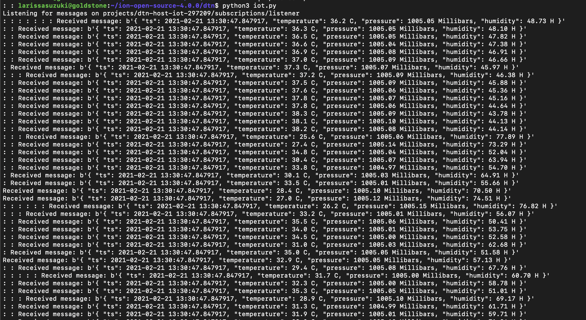
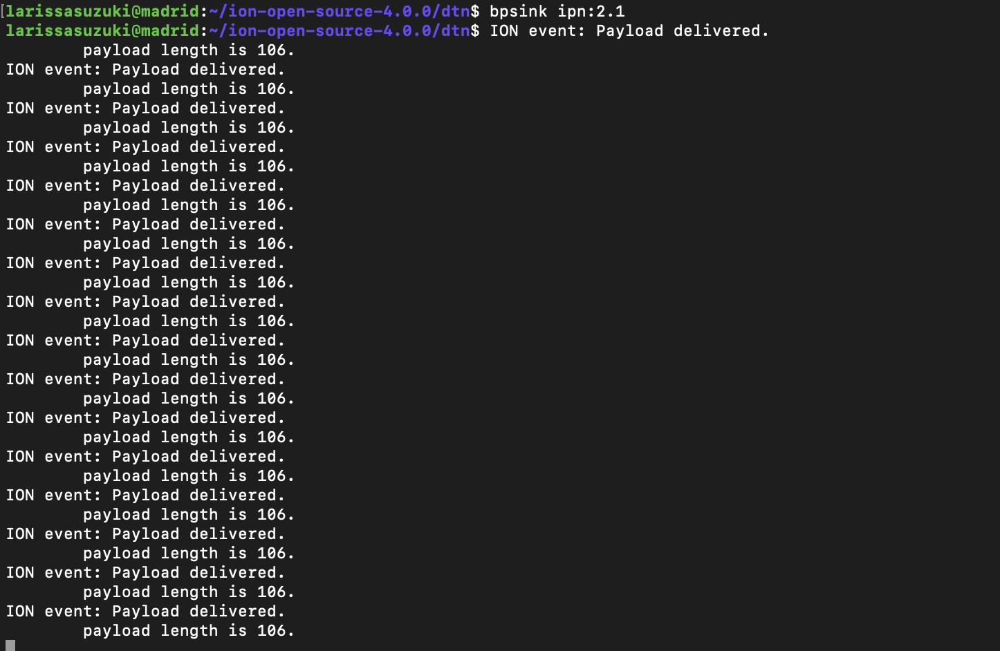

Telemetry Data on Cloud Vms using Pub/Sub and DTN
This project has been developed by Dr Lara Suzuki, a visiting Researcher at NASA JPL.
In this tutorial we will demonstrate how to connect a Raspberry Pi and Sensor Hat onto Google Cloud using cloud Pub/Sub on host 1 and serving the messages over DTN to host 2. This tutorial follows the [Running DTN on Google Cloud using a Two-Node Ring] tutorial and uses the configurations of host 1 and host 2 as described in the tutorial.
Setting up Raspbberry Pi and the Sense Hat
In this tutorial we use Raspberry Pi 4 model B (2018) and Sense Hat Version 1.0.
The first step is to be sure your Pi can connect to the Internet. You can either plug in an ethernet cable, or if you’re using WiFi, scan for networks your Pi can see. Plug your Pi in a monitor, and when it starts, at the top right corner you can find the wifi logo. Select the network you want to connect to. Once that is connected open your browser to check whether you can access the Internet.
Library dependency setup
The first thing to do is to make sure that the places where Raspberry Pi will be getting its libraries from is current. For this, on your Pi's terminal, run the following command:
The next step is to securely connect to a Pub Sub service running locally or on a cloud provider service. For this we will use JWT to handle authentication (librarypyjwt). The meta-model for communication used on the cloud Pub/Sub is based on publish/subscribe messaging technology provided by the MQTT (MQ Telemetry Transport) protocol (library paho-mqtt). MQTT is a topic-based publish/subscribe communications protocol that is designed to be open, simple, lightweight, easy-to-implement, and efficient in terms of processor, memory, and network resources.
On your Pi's terminal run the following commands
$ sudo apt-get install build-essential
$ sudo apt-get install libssl-dev
$ sudo apt-get install python-dev
$ sudo apt-get install libffi-dev
$ sudo pip install paho-mqtt
pyjwt library and its dependency, the cryptography library .
For telemetry data we are using Sense Hat. Sense Hat is composed by telemetry sensors such as temperature, accelerometer, humidity and pressure. To install the library for Sense Hat, run the command:
SSL Certificate - RSA with X509 wrapper
In order to authenticate in Google Cloud IoT Core, we need a SSL certificate. We will create an RSA with X509 wrapper. For this, execute the following command on your Pi's terminal:
$ openssl req -x509 -newkey rsa:2048 -keyout sensing_private.pem -nodes -out demo.pub -subj “/CN=unused”
Setting up a Pub/Sub servide on Cloud
Once your Raspberry Pi is fully set up, follow the instructions of your Cloud provider to create a Registry of your new Pub/Sub service. For your Pub/Sub 'topic', create a topic named: sensing
To connect your device on your cloud provider, you will likely to need to use an authentication method. In our case we use authentication using a Public Key in the format RS256_X509.
To copy the content of your Pi's public key, on the Pi's terminal run:
Copy everything, including the tages, between
and paste it in thePublic Key Value textbox.
Create a Subscription to listen to the Pub/Sub Topic
On your cloud provide Console, create a 'Subscription' to listen to the topic sensing we created in the previous steps. Now you should have all the pieces needed to send telemetry data from your Pi to a Pub/Sub service on a VM instance running on the cloud!
Send telemetry data from Raspberry Pi to Linux VM on the Cloud
The code on this repository named sense.py is based on the implementation of GabeWeiss.
In the code, edit the following fields:
ssl_private_key_filepath = '/home/pi/sensing_private.pem'
ssl_algorithm = 'RS256'
root_cert_filepath = '/home/pi/roots.pem'
project_id = 'if you have to use a project ID identifier in your cloud service'
registry_id = 'name of your registry'
device_id = 'name of your device'
Send telemetry data to from host 1 to host 2 via DTN
Log into the VM host 1. In the VM go to the base directory of ION and create a folder named dtn
iot.py. In this file configure the following parameters:
subscription_path = subscriber.subscription_path(
'ID_OF_YOUR_CLOUD_PROJECT', 'ID_OF_YOUR_SUBSCRIPTION')
host 2 as the receiver of the telemetry data:
On the terminal of host 1 and host 2, start ion:
On the terminal of host 2, start bpsink
On the terminal of host 1, start iot.py
On the terminal of host 1 you should see the print out of the telemetry data received as below:

On the terminal of host 2 you should see the payloads delivered. Please note that messages beyond 80 characters are not shown on bpsink:
